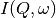
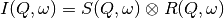
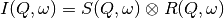
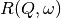
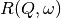
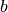
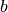

The measured data  is proportional to the convolution of the
scattering law  with the resolution function
with the resolution function  of the spectrometer via . The traditional method of analysis has been to fit the measured
with an appropriate set of functions related to the form of
predicted by theory.
of the spectrometer via . The traditional method of analysis has been to fit the measured
with an appropriate set of functions related to the form of
predicted by theory.
 and the  have the form of a Lorentzian - a
situation which is almost correct for reactor based backscattering
spectrometers such as IN10 & IN16 at ILL. The convolution of two Lorentzians
is itself a Lorentzian so that the spectrum of the measured and resolution
data can both just be fitted with Lorentzians. The broadening of the sample
spectrum is then just the difference of the two widths. and have a simple functional form and the convolution is also a function
containing the parameters of the and R(Q, omega) functions.
The convoluted function may then be fitted to the data to provide the
parameters. An example would be the case where the is a
Lorentzian and the is a Gaussian. function to provide an estimate of the sample scattering.
The result is least-squares fitted to the measured data to provide values for
the parameters in the function.
and the  have the form of a Lorentzian - a
situation which is almost correct for reactor based backscattering
spectrometers such as IN10 & IN16 at ILL. The convolution of two Lorentzians
is itself a Lorentzian so that the spectrum of the measured and resolution
data can both just be fitted with Lorentzians. The broadening of the sample
spectrum is then just the difference of the two widths. and have a simple functional form and the convolution is also a function
containing the parameters of the and R(Q, omega) functions.
The convoluted function may then be fitted to the data to provide the
parameters. An example would be the case where the is a
Lorentzian and the is a Gaussian. function to provide an estimate of the sample scattering.
The result is least-squares fitted to the measured data to provide values for
the parameters in the function.This latter form of peak fitting is provided by SWIFT. It employs a least-squares algorithm which requires the derivatives of the fitting function with respect to its parameters in order to be faster and more efficient than those algorithms which calculate the derivatives numerically. To do this the assumption is made that the derivative of a convolution is equal to the convolution of the derivative-as the derivative and the convolution are performed over different variables (function parameters and energy transfer respectively) this should be correct. A flat background is subtracted from the resolution data before the convolution is performed.
Four types of sample function are available for :
 in the form of
in the form of  where  can
be 2, 3 or 4. The Full Width Half-Maximum (FWHM) then has a Q-dependence
(power law) of the form
where  can
be 2, 3 or 4. The Full Width Half-Maximum (FWHM) then has a Q-dependence
(power law) of the form  . The has been numerically
Fourier transformed into and the
have been fitted with functions of the form of a modified Lorentzian. These
latter functions are used in the energy fitting procedures.
. The has been numerically
Fourier transformed into and the
have been fitted with functions of the form of a modified Lorentzian. These
latter functions are used in the energy fitting procedures.References:
Category: Concepts